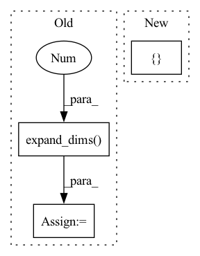

Pattern ID :17885
Before Change
sample_weight[len(X):] = 1.0*self.Cu/self.Cl
self.clf.fit(X, y)
unlabled_y = self.clf.predict(unlabled_X)
unlabled_y = np.expand_dims( unlabled_y, 1 )
u_X_id = np.arange(len(unlabled_y))
_X = np.vstack([X, unlabled_X])
_y = np.vstack([y, unlabled_y])
while self.Cu < self.Cl:
self.clf.fit(_X, _y, sample_weight=sample_weight)
while True:
unlabled_y_d = self.clf.decision_function(unlabled_X) // linear: w^Tx + b
unlabled_y_= unlabled_y.reshape(-1)
epsilon = 1 - unlabled_y_ * unlabled_y_d // calculate function margin
positive_set, positive_id = epsilon[unlabled_y > 0], u_X_id[unlabled_y > 0]
negative_set, negative_id = epsilon[unlabled_y < 0], u_X_id[unlabled_y < 0]
positive_max_id = positive_id[np.argmax(positive_set)]
negative_max_id = negative_id[np.argmax(negative_set)]
a, b = epsilon[positive_max_id], epsilon[negative_max_id]
if a > 0 and b > 0 and a + b > 2.0:
unlabled_y[positive_max_id] = unlabled_y[positive_max_id] * -1
unlabled_y[negative_max_id] = unlabled_y[negative_max_id] * -1
unlabled_y = np.expand_dims(unlabled_y, 1)
_y = np.vstack([y, unlabled_y])
self.clf.fit(_X, _y, sample_weight=sample_weight)
else:After Change
// print(classes)
self.class_dict={classes[0]:-1,classes[1]:1}
self.rev_class_dict = { -1:classes[0] , 1:classes[1]}
y=copy.copy(y)
for _ in range(L):
y[_]=self.class_dict[y[_]]
In pattern: SUPERPATTERN
Frequency: 4
Non-data size: 3
Instances Fragment ID: 58589548
Project Name: ygzwqzd/lamda-ssl
Commit Name: 583dd75539ccb548ccfa1f9f19745f30ddb05288
Time: 2022-02-09
Author: 1129198222@qq.com
File Name: Semi_sklearn/Model/Classifier/TSVM.py
M Class Name: TSVM
N Class Name: TSVM
M Method Name: fit(4)
N Method Name: fit(4)
M Parent Class: ClassifierMixin,TransductiveEstimator
N Parent Class: ClassifierMixin,TransductiveEstimator
M File Name: Semi_sklearn/Model/Classifier/TSVM.py
N File Name: Semi_sklearn/Model/Classifier/TSVM.py
M Start Line: 65
M End Line: 92
N Start Line: 66
N End Line: 122
Before Change
one_hot_labels = tf.one_hot(tf.cast(anchor_classes, "int32") - 1, num_classes) // [1, 81] -> [0, 80]
// Mark iou < ignore_threshold as 0, ignore_threshold < iou < overlap_threshold as -1, iou > overlap_threshold as 1
marks = tf.where(anchor_classes > 0, tf.ones_like(anchor_classes), anchor_classes)
marks = tf.expand_dims( marks, -1 )
one_hot_labels, marks = tf.cast(one_hot_labels, dest_boxes.dtype), tf.cast(marks, dest_boxes.dtype)
return tf.concat([dest_boxes, one_hot_labels, marks], axis=-1)
After Change
def to_one_hot_with_class_mark(anchor_bboxes_with_label, num_classes=80):
// dest_boxes, anchor_classes = anchor_bboxes_with_label[:, :4], anchor_bboxes_with_label[:, -1]
dest_boxes, anchor_classes = tf.split(anchor_bboxes_with_label, [ 4, 1 Fragment ID: 58589545
Project Name: leondgarse/keras_cv_attention_models
Commit Name: 08f8642b759fd1329a1348620ac2d0f0b343ca3f
Time: 2022-03-02
Author: leondgarse@gmail.com
File Name: keras_cv_attention_models/coco/data.py
M Class Name: AnonimousClass
N Class Name: AnonimousClass
M Method Name: to_one_hot_with_class_mark(2)
N Method Name: to_one_hot_with_class_mark(2)
M Parent Class:
N Parent Class:
M File Name: keras_cv_attention_models/coco/data.py
N File Name: keras_cv_attention_models/coco/data.py
M Start Line: 409
M End Line: 413
N Start Line: 284
N End Line: 285
Before Change
image *= 255
image = tf.image.resize(image, input_shape, method=resize_method, antialias=resize_antialias)
if len(image.shape) == 3:
image = tf.expand_dims( image, 0 )
if self.rescale_mode == "raw":
return image
elif self.rescale_mode == "raw01":After Change
if input_shape is not None:
self.set_input_shape(input_shape)
images = [ image Fragment ID: 58589540
Project Name: leondgarse/keras_cv_attention_models
Commit Name: 2f70b0d51c8f2b1f8664f32dc75ecc1001758946
Time: 2023-01-29
Author: leondgarse@gmail.com
File Name: keras_cv_attention_models/common_layers.py
M Class Name: PreprocessInput
N Class Name: PreprocessInput
M Method Name: __call__(5)
N Method Name: __call__(5)
M Parent Class:
N Parent Class:
M File Name: keras_cv_attention_models/common_layers.py
N File Name: keras_cv_attention_models/common_layers.py
M Start Line: 586
M End Line: 601
N Start Line: 609
N End Line: 616
Before Change
img = img[:,:,::-1] // Became BGR
img = np.expand_dims(img,0)
if mask is not None:
mask = np.expand_dims( mask,0 )
lm = lm - np.reshape(np.array([(w/2 - 112),(h/2-112)]),[1,2])
return img, lm, mask, cropped_img, [left_c, right_c, up_c, below_c]
After Change
img = np.expand_dims(img,0)
lm = lm - np.reshape(np.array([(w/2 - 112),(h/2-112)]),[1,2])
return img, lm, cropped_img, [ left_c, right_c, up_c, below_c, render_size, t[0]-w0/2, h0/2-t[1] Fragment ID: 58589539
Project Name: yeongjoonju/cfr-gan
Commit Name: 6840d7a2588a39fce22c2c80665f3796945ac43c
Time: 2022-02-27
Author: yj_ju@korea.ac.kr
File Name: mmRegressor/preprocess_img.py
M Class Name: AnonimousClass
N Class Name: AnonimousClass
M Method Name: process_img(5)
N Method Name: process_img(6)
M Parent Class:
N Parent Class:
M File Name: mmRegressor/preprocess_img.py
N File Name: mmRegressor/preprocess_img.py
M Start Line: 32
M End Line: 77
N Start Line: 47
N End Line: 67